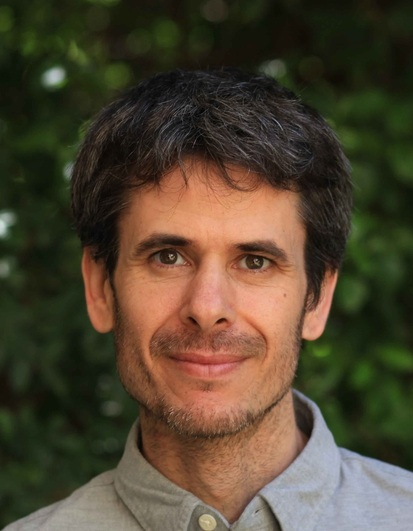

Dr. Nir Rotem
Sociologist
The Hebrew University of Jerusalem
About Me
I am a sociologist examining the construction and transformation of social knowledge and the contestations involved in its global circulation. My work lies at the intersection of transnational sociology, the sociology of knowledge, and political sociology.
Currently, I serve as a Research Fellow at the Hebrew University of Jerusalem. I earned my PhD from the University of Minnesota (2022). My doctoral dissertation investigated gradual shifts in the humanitarian idea through a historical ethnography of the UNHCR.
Research Interests
- Sociological neoinstitutionalism
- World society theory
- Sociology of knowledge & culture
- Global rise of illiberalism
- Sociology of science & higher education
Contact: nir.rotem [at] mail.huji.ac.il